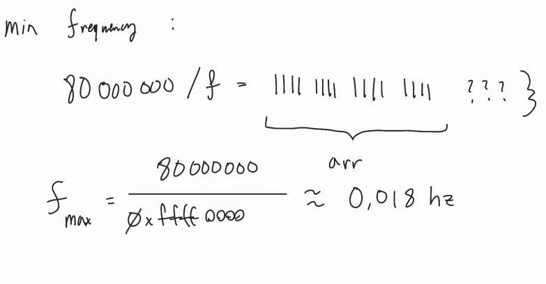
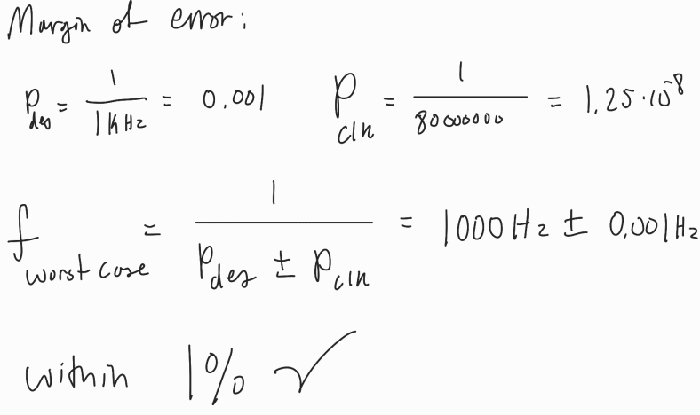
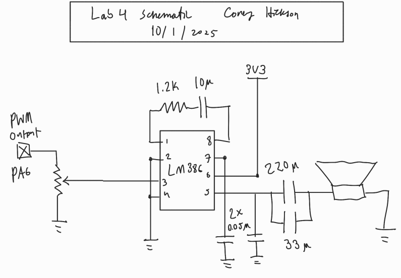
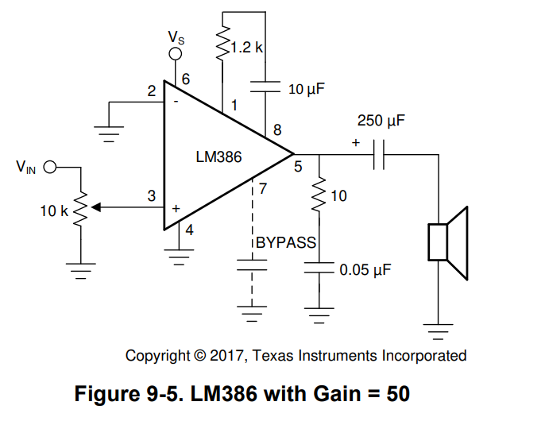

Lab 4: Digital Audio
Introduction
This report outlines the design of a device driver library to play music using a microcontroller
Design methodology
The primary challenge of this lab was the close reading of the spec required to configure the registers to work together properly to wait accurate amounts of time and output accurate pitchs via a PWM output
Timing design
For my delay timer which simply waited an input number of milliseconds, I chose PSC = 800 and ARR = 100 such that the timer waits exactly 1 ms between reset and UIF going high. This means that delays are always in mulitples of 1 ms, with some very small overhead for resetting the counter. This means that the minimum wait time is 1 ms and the maximum is bounded by the size of the int iteration variable in a for loop (2^32 or ~4 billion milliseconds).
For creating the PWM square wave I began by chosing PSC = 1 and naively calculating ARR by dividing the clock frequency by the desired pitch frequency. Then, I check if the ARR takes up more than 16 bits, in which case I divide it by two and double the PSC to keep the effective frequency the same. In this way, the PWM frequency will be as close as possible to the desired frequency since it is accurate to within the limits of precision of the fast clock frequency.
In theory, this means that the lower limit on the pitch are the clock frequency.
The upper bound on the pitch is a bit trickier to calculate.

Additionally, the percent error is going to be worst for higher frequencies since the resolution depends on the frequency of the fast clock. In the worst case, this is about 1kHz with a margin of error of the period of 80 MHz.

Technical Documentation
The SystemVerilog source code for this lab can by found on my github page
Schematic

The schematic from figure 3 is derived from the reference design in the data sheet for the audio amp found here

Results and Discussion
I successfully produces a set of drivers to program peripherals on the MCU without use of the hardware abstraction layer. This lab took me roughly 12 hours.
AI Prototype
I gave MS BING the following prompt:
“What timers should I use on the STM32L432KC to generate frequencies ranging from 220Hz to 1kHz? What’s the best choice of timer if I want to easily connect it to a GPIO pin? What formulae are relevant, and what registers need to be set to configure them properly?”
to which it responding the following:
To generate frequencies between 220Hz and 1kHz on the STM32L432KC, here’s a breakdown of the best timer choices, relevant formulas, and configuration steps:
🕒 Recommended Timers for Frequency Output The STM32L432KC features several general-purpose timers: Timer Bit Width Channels GPIO Compatibility Notes TIM2 32-bit 4 Good Ideal for low-frequency precision TIM3 16-bit 4 Good Sufficient for 220Hz–1kHz range TIM21 16-bit 2 Limited Less flexible for GPIO TIM22 16-bit 2 Limited Similar to TIM21
Best choice: TIM2 is ideal due to its 32-bit resolution and wide GPIO mapping options.
📐 Key Formula for Timer Frequency To generate a specific output frequency ( f_{out} ), use: [ f_{out} = ] Where: ( f_{timer} ) is the timer input clock (e.g., 16MHz from APB1) PSC = Prescaler ARR = Auto-reload register You can adjust PSC and ARR to achieve your target frequency. For example, to get 440Hz from a 16MHz clock: [ (PSC + 1) (ARR + 1) = ,364 ] Choose PSC = 35, ARR = 1039 → ( f_{out} 440.1Hz ) Use NicheCalcs STM32 Timer Calculator to simplify this process.
⚙️ Registers to Configure To set up a timer for output on a GPIO pin (e.g., PWM or toggle mode): Enable Timer Clock
RCC->APB1ENR1 |= RCC_APB1ENR1_TIM2EN;
Configure GPIO Pin for Alternate Function
RCC->AHB2ENR |= RCC_AHB2ENR_GPIOAEN; GPIOA->MODER |= (0x2 << GPIO_MODER_MODER0_Pos); // AF mode GPIOA->AFR[0] |= (0x1 << GPIO_AFRL_AFSEL0_Pos); // AF1 for TIM2_CH1
Set Timer Mode and Output Compare
TIM2->PSC = 35; TIM2->ARR = 1039; TIM2->CCR1 = ARR / 2; // 50% duty cycle TIM2->CCMR1 |= (0x6 << TIM_CCMR1_OC1M_Pos); // PWM mode 1 TIM2->CCER |= TIM_CCER_CC1E; // Enable output TIM2->CR1 |= TIM_CR1_CEN; // Start timer
Optional: Force ARR update
TIM2->EGR |= TIM_EGR_UG;
Would you like help calculating the exact PSC and ARR values for a full range of notes or frequencies? I can generate a table for you.
To me this looks promising, and maybe could have helped me get a better start on the lab. However, I do not see how this would’ve helped me to configue the frequency of the PWM signal for different tones.
I attemped to provide the reference mandual to a subsequent BING chat, and it simply hung without responding anything.